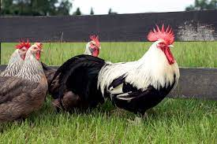
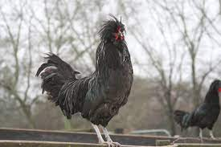
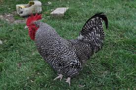
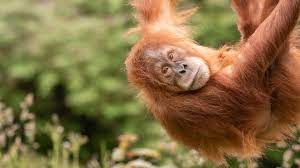
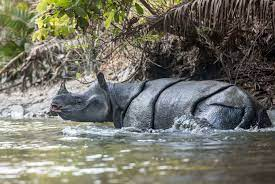
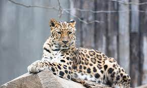

DORKING CHICKEN  |
- Habitat: Dorking chickens are a breed of domestic poultry originally from the town of Dorking in England. They are adaptable and can thrive in a variety of environments.
- Lifespan: Dorking chickens typically have a lifespan of 5 to 8 years.
- Type of Eating: Dorking chickens are omnivorous and feed on a diet that includes grains, seeds, insects, worms, and various vegetation.
|
CREVECOEUR CHICKEN  |
- Habitat: Crevcoeur chickens are a heritage breed of chicken originating from France. They are well-adapted to the French climate and are typically raised in various regions.
- Lifespan: Crevcoeur chickens have an average lifespan of 5 to 8 years.
- Type of Eating: Crevcoeur chickens are omnivorous and consume a diet consisting of grains, seeds, insects, worms, and plant material.
|
SCOTS DUMPY CHICKEN  |
- Habitat: Scots Dumpy chickens, also known as Bakies, are a traditional breed from Scotland. They are well-suited to the rugged and harsh Scottish landscape.
- Lifespan: Scots Dumpy chickens have an average lifespan of 5 to 8 years.
- Type of Eating: Scots Dumpy chickens are omnivorous and forage on a diet that includes grains, seeds, insects, worms, and vegetation.
|
SUMATRAN ORANGUTAN  |
- Habitat: Sumatran orangutans are native to the island of Sumatra in Indonesia. They primarily inhabit tropical rainforests, including lowland forests and montane forests.
- Lifespan: Sumatran orangutans have a lifespan of approximately 30 to 45 years in the wild.
- Type of Eating: Sumatran orangutans are primarily herbivorous, feeding on a diet consisting of fruits, leaves, bark, flowers, and occasionally insects.
|
JAVAN RHINOCEROS  |
- Habitat: Javan rhinoceros is one of the rarest large mammals and is found in select locations on the island of Java, Indonesia. They inhabit dense tropical rainforests and swampy areas.
- Lifespan: Javan rhinoceros can live up to 30 to 40 years in the wild.
- Type of Eating: Javan rhinoceros are herbivorous and primarily graze on a diet of grasses, leaves, shoots, and fruits.S
|
AMUR LEOPARD  |
- Habitat: Amur leopards are native to the Russian Far East and northeastern China. They inhabit temperate forests and mountainous regions.
- Lifespan: Amur leopards have an average lifespan of 10 to 15 years in the wild.
- Type of Eating: Amur leopards are carnivorous predators, feeding on a diet consisting of various prey animals such as deer, boar, hares, and small mammals.
|